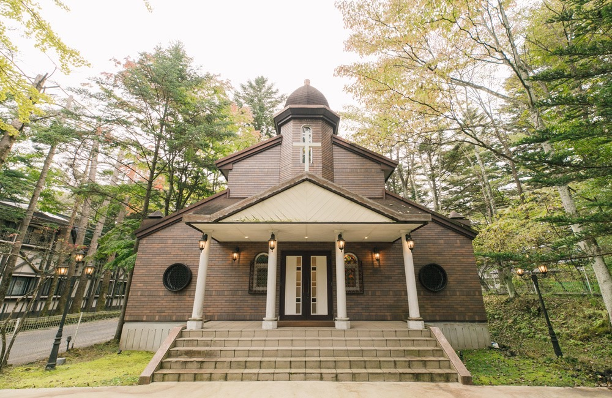
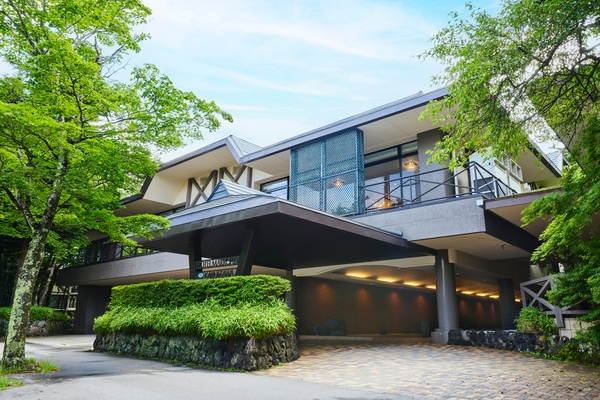

Route A岡山より ─ 新郎の家族
岡山 ──▶ 東京
東海道・山陽新幹線 のぞみ ／ 09:03 → 12:24
3h20m
東京 ──▶ 軽井沢
北陸新幹線 あさま ／ 12:52 → 14:00
1h08m
- Total
- 約 5時間
- 乗り換え
- 東京駅で1回
（同一構内・約25分）
Okayama → Karuizawa

Wedding Invitation & Guide
〇〇 修作 ・ 〇〇 花子
家族だけの、小さな一日です。
当日の流れとご案内をまとめました。
Greeting
このたび私たちは、軽井沢の小さな教会で結婚式を挙げることになりました。
大勢をお招きするかたちではなく、いちばん近くにいてくれた家族だけで、 静かに一日を過ごしたいと思っています。 遠方からお越しいただくことになりますが、 高原の空気と、少しゆっくりした時間もあわせて楽しんでいただけたら嬉しいです。
当日の集合時間・移動・宿泊のご案内をまとめました。 当日はこのページを開いてご確認ください。
二〇二六年 初秋
修作 ・ 花子
images/karuizawa.jpg

高原の林のなかに、ちいさな教会があります。
集合は 15:30、挙式は 16:00 開始です。
お式は遅くとも 17:30 には終わります。
軽井沢駅 到着
駅からチャペルまでは車で約10分。送迎あり／タクシーを予定しています。
集合・受付
チャペルのロビーにお集まりください。お手洗い・身支度はこちらで。
挙式Ceremony
所要 約30分。写真撮影を含めて 17:30 ごろまで。
記念撮影・小休憩
チャペル周辺の林でご家族の集合写真を撮ります。
会食会場へ移動
車で約10分／お荷物はホテルへ先に預けられます。
お食事会
軽井沢〇〇（調整中）／個室を予約しています。2時間ほどを予定。
解散・ご宿泊先へ
そのままホテルへお戻りください。翌朝の予定は自由行動です。
Please note
軽井沢は夕方から冷えます（17時以降は上着があると安心です）。
時間が前後する場合は、当日グループLINEでお知らせします。
出発地が分かれるため、ルートを二つに分けてご案内します。
時刻はいずれも目安です。切符は各自でお手配ください。
地図の位置は会場が決まりしだい差し替えます。
Route A岡山より ─ 新郎の家族
東海道・山陽新幹線 のぞみ ／ 09:03 → 12:24
北陸新幹線 あさま ／ 12:52 → 14:00
Okayama → Karuizawa
Route B天王台より ─ 新婦の家族・私たち
JR常磐線（快速）／ 12:30 → 13:10
北陸新幹線 あさま ／ 13:32 → 14:40
Tennodai → Karuizawa
全員分の客室をこちらで確保しています。
チェックインは到着後、式の前に済ませておくとスムーズです。
images/hotel.jpg
チャペル・お食事会場のいずれからも車で10分ほどの距離です。
宿泊費はこちらで手配済みです。
お食事・お飲み物などの追加分のみご精算をお願いします。
総勢 9 名。ちいさな、家族だけの一日です。
3 from Okayama
3 from Tennodai
お名前は仮置きです。ご記帳のとおりに差し替えます。
かしこまりすぎない略礼装で。男性はダークスーツ、女性はワンピースなど。
チャペル周辺は砂利道があるため、ヒールの高い靴はお控えいただくと安心です。
10月の軽井沢は、日中18℃前後・夕方は10℃を下回ることもあります。羽織るものを一枚お持ちください。
2歳の息子も一緒に参列します。式中に泣いてしまってもどうかご容赦ください。ベビーカーはチャペルのロビーに置けます。
プロのカメラマンが入ります。挙式中の撮影は着席のままお願いします。
撮影データは後日、共有アルバムでお渡しします。
家族だけの会ですので、ご祝儀・お祝いのお品はどうぞお気遣いなく。
来てくださることが何よりの贈りものです。